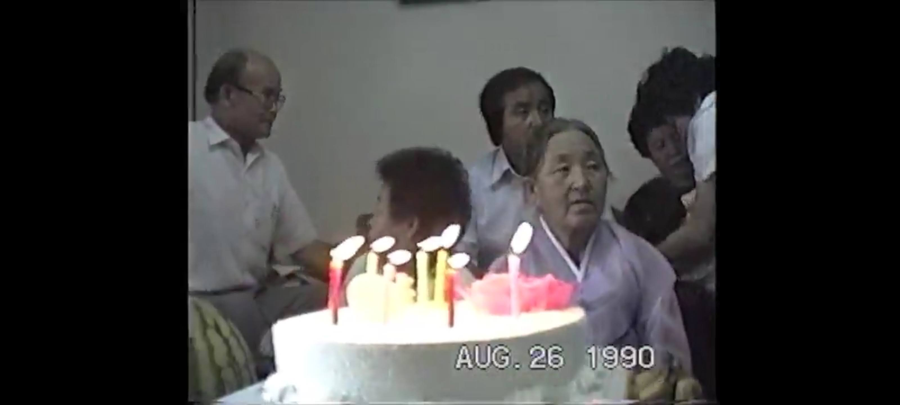

Celebrated the first holiday, a wedding and a 돌잔치 (First Birthday Celebration) -- without my parents generation.
Within the last 3 years, first my father (2020), followed by my mother-in-law (2021), then my mother (2023), they left us.
Could no longer count on them to be there and guide us on what to do.
Felt alone as the holidays and events approached.
Where will we gather, who will be there?
How will we plan for these events?
Apprehension set in as the wedding date approached.
Did I contact enough people, will they be able to come the reception
What about 폐백 (幣帛), who will lead it?
I have only participated and watched the proceedings.
There had always been others with better, more complete knowledge.
What about the First Birthday Celebration?
Will I remember the sequence and arrangements for the 돌잔치, particularly 돌잡이.
Then I remembered a family gathering some 33 years ago.
That Gathering at 木洞
Sister K and I were in Korea, with our first born, to meet her family for the first time.
Neither my father-in-law nor my mother-in-law came to the US for the wedding.
I was welcomed into their family and had a chance to meet the extended family.
In contrast to our small family that escaped from 북한 (北韓), Sister Ks family had lived in the same area for hundreds of years.
My parents and my sisters also came to Korea.
To celebrate the 80th Birthday of my grandmother Kim.
Also the 60th Birthday of my father.
As a bonus, our daughter celebrated her 100th day while in Korea.1

This was before the Internet, before cell phones.
Don’t know how, but all guests were contacted, invited and came to the gathering
Chosen date was Sunday, August 26th.
The place was an apartment in 목동 (木洞) in Seoul.
This was my first time seeing my extended family in 16 years.
I was worried that there might be some distance after all those years.
My paternal grandmother had 4 sons and a daughter.
My maternal grandmother had a son and 4 daughters.
My father was the oldest and my mother was the oldest in her family.
Didn’t have to worry about people not recognizing me.
After living alone in US for nearly 2 decades it felt wonderful to be among those that knew who I was.
People came throughout the day.
No set time meant people came when it was convenient.
However, for the people in charge of the meal, it meant a new setting with a new arrival of family members.
My uncle became the de facto MC as he greeted and became the bridge between generations and among my father’s and my mother’s family and his wife’s family.
The Family Entertainer
This is the same uncle that moon lighted as a wanna be medicine salesman on the trains and buses, in his college days.
Everyone was encouraging him to perform.
Although he refused at first, by the afternoon, and after a few beers, he gave in.
He gave a 2-part performance.
Audio Recording
First act was pretending he was a factory direct sales man of 우황청심원 (牛黃淸心元) Medicine 2
He re-enacted a frantic scene of a baby crying, waking up from a dream.
A dream where he fell from a cliff.
Everyone is looking for medicine but none can be found.
There are watches and jewelry aplenty but no medicine can be found.
Then he would say, you would pay a lot more if this product was packaged and sold through the normal channel.
But today only, you can buy it for a special price of a few bucks.
The second routine was for him to relate how he became an orphan.
His father died while working as a 나무군3. From falling off a tree.
And his mom ran off with the neighborhood barber
So he would sing a sad song and do a simple trick and ask for a small donation to help him.
My mother, who witnessed this, confirmed that people actually applauded his performance and gave him money.
Not sure how much planning was involved and don’t know the budget for that event.
But it is an event that we all remembered.
Seeing our relatives again prompted my sister and I to find a way to go back to Korea.
My sister, who worked for Motorola, spent a year working in Korea.
I followed her and lived in Korea for a few years, starting in 1999.
I worried unnecessarily.
Though our parents didn’t leave a detailed instructions, they left us with enough personal demonstration for us to carry on the tradition
Including an approach that has worked for them
Prepare well and let higher power guide and help
As well as let the talents of others shine at events.
Because the wedding and 돌잔치 were within 10 days.
Most people took an extended vacation and stayed for the whole duration.
Some came from the East Coast, the West Coast, and some even Korea
Much like the combined events of 1990 — but even better organized and implemented.
Though small in number, didn’t feel alone
Young people did a much better job of implementation. The color and design were all updated and looked modern yet captured the essence of the occassion.
The cousin that MCed the 폐백 knew facts that older people had forgotten.
People came at the appointed hour, visited and made the event memorable.
Thanks to the the former generation for demonstrating how to organize a family gathering.
Thank you, the young generation, for researching, interpreting and making the tradition even better and making them your own.